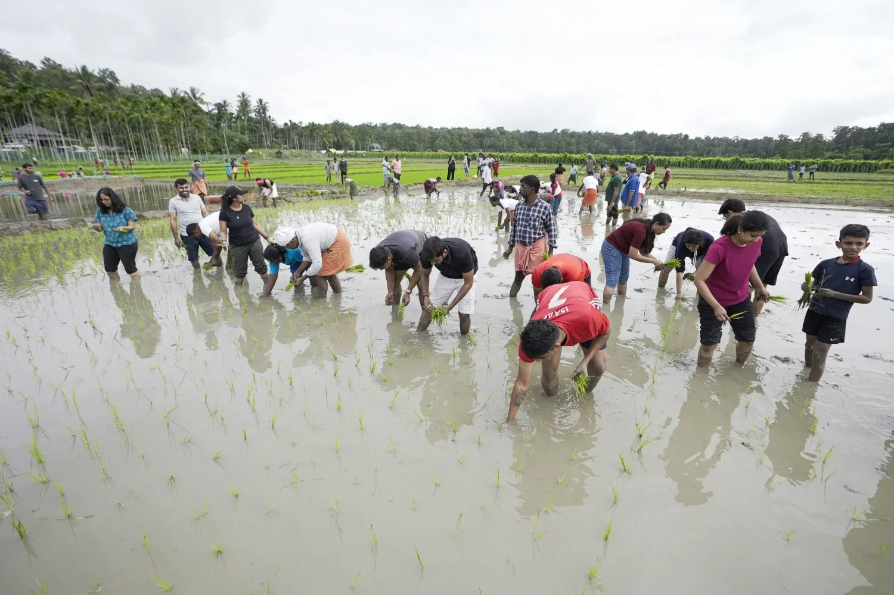

Regenerative Agriculture
Regenerative Agriculture
Before & After: A once monocrop rubber plantation being transformed into a buoyant food forest ‘Saarang’ in Kannur, Kerala.
Three years ago, GoodEarth started creating the Saarang food forest in north Kerala. Earlier, it was a monocrop rubber plantation.
In heavy rainfall areas, agricultural lands degrade very fast due to surface and subsurface soil erosion combined with nutrient leaching.
Monoculture plantations like rubber, coffee, tea etc have shallow roots and cannot anchor top soil to the Mother rock, and triggers soil erosion and landslides as experienced in the Western Ghats.
The living world exists with constant interaction of all life forms. Biodiversity and a thriving ecosystem is essential for the stability of farmlands in the long run.
Mini dams
In forests, the dense canopy absorbs the impact of heavy rains. The forest floor with decomposed organic matter together with burrowing activity of earthworms, termites, crabs, rats etc acts like a sponge absorbing rainwater during rains and slowly releasing it into the streams.
Many endemic trees and plants have a tendency to absorb and store water in its structure during rains and release it during summer; they act like small water tanks.
Thus, a forest hill is a water reservoir, stores water during rains and slowly releases it, ensuring perennial rivers downstream.
But when a forest is cut and agriculture is introduced, the water holding capacity of the land comes down drastically. As a result, floods increase during rains and streams and rivers dry up during summer.
This has been going on since the time mankind started agriculture, all over the world. Desertification, therefore, is a by-product of unsustainable agricultural interventions.
Trees such as Rubber, Eucalyptus, Acacia from the south of the equator have an opposite behavior as opposed to endemic trees of our north; they absorb less water during monsoon and uptake more water during our summer, triggering floods and drought.
Mimicking forest ecology
Ecological revival: With patience, science, keen understanding of the symbiotic relationship in nature, a hands-on team and an insatiable desire to observe and learn, a land, however degraded, can be brought to life.
Saarang food forest is an effort to mimic the forest ecology. The multi-layer crop architecture is such that the crops capture sunlight at different levels and have a strong root network to control soil erosion above and below ground.
We have about 100 varieties of edible crops ranging from tubers, greens, vegetables, fruits, spices, nuts to herbs.
We are excited to watch wild edible mushrooms and honey bees coming back. The food forest is now rich in pollinators and predators after three years. We notice an increase in bees, wasps, butterflies, birds, earthworms, termites, spiders, scorpions, snakes, lizards and other fauna making it their home.
The sponge effect of the soil is increasing with decomposition of more organic matter. As the plant roots are growing deeper the water holding capacity of the farmland is increasing. The soil temperature is decreasing. Carbon sequestration is happening in the soil as well as in the vegetation.
A vibrant learning centre
Learning hub: Our team in ‘Saarang’ actively engages with children and enthusiasts alike and makes environmental education fun.
A team of hands-on people, who are involved in the design and management of the farm, are growing in confidence and competence. We have installed an automatic weather station and there’s a research team documenting the work.
We have school groups visiting the farm every week. Naturalists, farmers and the general public too visit the food forest regularly.
We hope the farm will grow into a learning centre in agriculture, ecology, geology, climate resilience and promote hands-on practice. The centre may inspire many youngsters to take up agriculture seriously as a constructive response to climate change.
The only way to combat climate change is to practice regenerative agriculture in farmlands and wastelands. As many as 100 million hectares of land in India is under desertification.
India, with her large population and vast tracts of degraded land, can probably lead the fight to reverse climate change.
Related Posts
Regenerative Agriculture

Regenerative Agriculture
Leave A Comment